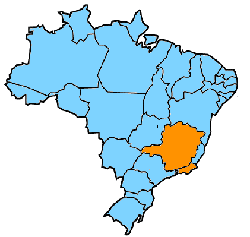

Fundada em Janeiro de 2011 por Carlos Alberto F. Góes, a EXATA Assessoria de Seguros presta serviços ao mercado segurador brasileiro atuando em revisões de controle de qualidade, revisões/supervisões ,regulações de sinistros, vistorias prévias e demais assuntos ligados a esse segmento. As extensas informações, adquiridas por seu sócio fundador ao longo de mais de trinta anos de experiência, nos permite oferecer as melhores alternativas, soluções e oportunidades de negócios aos nossos clientes.
Nossa missão é prestar serviços, garantindo agilidade e um atendimento que supere expectativas, viabilizando somente custos necessários às seguradoras.
Com a expertise de mais de trinta anos no mercado de seguros através de seus administradores, a EXATA nasceu com o desafio de implementar um processo de revisões de controle de qualidade, supervisão/revisão, ágil e com o retorno esperado pelos clientes, no tocante a validação da correta aplicação dos procedimentos de reparação em relação aos orçamentos/custos ora aprovados. Liderando este projeto a EXATA conta, em sua equipe, com profissionais com larga experiência em diversas empresas do mercado segurador nacional.
Revisões de Controle de Qualidade
Supervisões
Supervisões de Mesa (interna/por imagem)
Avaliações de Classificação de Danos (LCD)
Regulação de Sinistros
Constatação de Danos
Vistoria Local
Vistoria Prévia (Aceitação do Risco)
Vistoria RE (Ramos Elementares)
Acompanhamento de sinistros juntos às oficinas
Demais serviços: sob consulta (fale conosco)
Temos capacidade de atuar em todo território nacional, sendo que hoje temos uma presença maciça em todo o Sudeste. Para maiores informações,favor entrar em contato através da opção “fale conosco”

Onde Estamos:
Av. Presidente Vargas, 435/grupo 702
Centro – Rio de Janeiro – RJ
CEP 20.071-904
Email: blablabla@gla.com.br